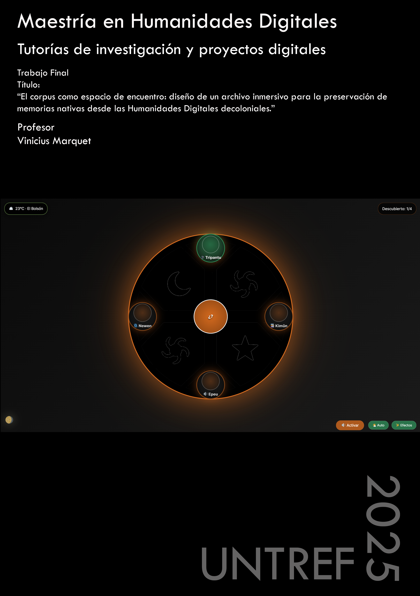

Investigación
Humanidades Digitales
Archivos inmersivos, memorias nativas, decolonialidad

Las memorias nativas no se preservan extrayéndolas: se preservan habitándolas. El archivo inmersivo no es un depósito de objetos digitales —es un espacio de encuentro entre saberes, cuerpos y tecnologías.
Mi investigación se sitúa en el cruce entre las Humanidades Digitales, la decolonialidad y las prácticas artísticas inmersivas. El eje central es la pregunta por cómo preservar memorias nativas —específicamente de la cosmovisión mapuche— sin reducirlas a datos, sin desarraigarlas de sus contextos de producción, sin someterlas a la lógica del archivo occidental.
La respuesta que propongo es el archivo inmersivo: un dispositivo que integra capas documentales, sensoriales, espaciales e interactivas para crear experiencias de encuentro donde el usuario no consulta información sino que habita un mundo de sentido.
Trayectoria académica
Formación e investigación
Maestría en Humanidades Digitales
Tesis: «Hacia un archivo inmersivo: memorias nativas, tecnología y Humanidades Digitales decoloniales»
- Director: Dr. Santiago Durante
- La tesis profundiza el concepto de archivo inmersivo como paradigma de preservación digital que articula multimodalidad, memoria encarnada y participación comunitaria
- Explora la noción de corpus no como colección cerrada sino como espacio de encuentro intercultural mediado por tecnología
- Caso de estudio: memorias y prácticas de la cosmovisión mapuche en la comarca andina patagónica
- Marco teórico: Humanidades Digitales decoloniales (Fiormonte, Risam), Design Justice (Costanza-Chock), memoria encarnada (Taylor), colonialidad del saber (Quijano, Mignolo)
Especialización en Humanidades Digitales
TFI: «Hacia un archivo inmersivo: memorias nativas, tecnología y Humanidades Digitales decoloniales»
- Propuesta del modelo de cuatro capas como arquitectura conceptual y técnica del archivo inmersivo
- Desarrollo de un prototipo funcional (archivo.lof.org.ar) centrado en la cosmovisión mapuche
- Articulación teórico-práctica entre saberes ancestrales y herramientas digitales contemporáneas
- Análisis crítico de los archivos digitales existentes y sus limitaciones para la preservación de memorias orales, rituales y territoriales
- Propuesta metodológica basada en Design Justice: diseñar con las comunidades, no para ellas
Licenciatura en Gestión Educativa
Licenciado Nacional en Cinematografía y Nuevos Medios
Profesor para la Educación Secundaria en Concurrencia con el Título de Base
Especialización Docente de Nivel Superior en Educación y TIC
Formación docente continua — Postítulos
- Postítulo Escuela Secundaria Río Negro — Min. de Educación y DDHH de Río Negro · 2018
- Postítulo Actualización Académica: La formación docente hoy y los desafíos emergentes — Min. de Educación y DDHH de Río Negro · 2022
- Postítulo en Educación Sexual Integral — Instituto Nacional de Formación Docente · 2023
Diplomaturas y formación especializada
- Diplomado en Apropiación de Tecnologías para la Comunicación de Organizaciones Sociales — Universidad de Buenos Aires · 2022
- Diplomado en Diversidad Cultural — Universidad Nacional de la Patagonia San Juan Bosco · 2020
- Diplomado en Agroecología, Soberanía Alimentaria y Políticas Públicas — Universidad Nacional de la Patagonia San Juan Bosco · 2020
- Diplomado en Gestión de Proyectos Culturales para el Desarrollo en Comunidad — Instituto Universitario Patagónico de Artes / Min. de Cultura de la Nación · 2022
- Diplomatura Superior en Soberanía y Políticas Culturales en América Latina — CLACSO / Min. de Cultura de la Nación Argentina · 2022
Perito Mercantil
Marco teórico-técnico
Modelo de cuatro capas
El archivo inmersivo se estructura como un sistema de capas que se superponen y dialogan entre sí. Cada capa aporta una dimensión irreductible de la experiencia: lo que se lee, lo que se percibe, lo que se habita, lo que se co-crea.
1. Capa documental
Lo que se lee y se escucha
Testimonios orales, textos, transcripciones, documentos históricos, relatos comunitarios. La base narrativa y textual del archivo. Incluye metadatos enriquecidos, descripciones contextuales y sistemas de catalogación respetuosos con las categorías propias de las comunidades.
2. Capa sensorial
Lo que se percibe con el cuerpo
Paisajes sonoros, registros audiovisuales, composiciones electroacústicas, fotografía de alta resolución. Todo aquello que se percibe más allá de la lectura: el sonido del viento, el color del bosque, la textura del territorio. Audio binaural y video como vehículos de memoria sensorial.
3. Capa espacial
Lo que se habita
Video 360°, entornos virtuales, mapas interactivos, geolocalización. El espacio como contenedor de memoria. Esta capa permite al usuario situarse en el territorio, recorrerlo, habitarlo virtualmente. La espacialidad como modo de conocimiento: no es lo mismo leer sobre un bosque que estar dentro de él.
4. Capa interactiva
Lo que se co-crea
Navegación no lineal, participación del usuario, contribución comunitaria, co-creación. El archivo como encuentro: no un depósito pasivo de información sino un espacio vivo donde las comunidades pueden aportar, corregir, ampliar y recontextualizar sus propias memorias.
Campo conceptual
Conceptos clave
Nociones que atraviesan y articulan la investigación.
Archivo inmersivo
Dispositivo de preservación digital que integra capas documentales, sensoriales, espaciales e interactivas. No almacena objetos: crea condiciones para habitar memorias.
Decolonialidad
Cuestionamiento de la colonialidad del saber que opera en los archivos digitales. Visibilizar qué voces se preservan, en qué formatos, bajo qué categorías y con qué protocolos.
Multimodalidad
Reconocer que el conocimiento no es solo textual. Hay saberes que son sonido, gesto, canto, territorio. El archivo debe poder alojar todas estas modalidades sin jerarquizarlas.
Memoria encarnada
Saberes que residen en cuerpos, rituales y prácticas performáticas. No se pueden «digitalizar» en el sentido tradicional: requieren dispositivos que preserven su dimensión corporal y experiencial.
Design Justice
Marco de diseño (Sasha Costanza-Chock) que prioriza la participación de las comunidades afectadas en todo el proceso de diseño. Diseñar con, no para. Las comunidades como co-autoras del archivo.
Humanidades Digitales del Sur
Pensar las Humanidades Digitales desde contextos periféricos, con agendas propias. No importar herramientas y marcos del norte global sino construir desde las necesidades y epistemologías locales.
Publicaciones
Working papers y ponencias
Working paper · Zenodo · v2.0 · Julio 2026
The Immersive Archive as Transferable Protocol
Modelo teórico, metodológico y ético para el diseño de dispositivos digitales-físicos para la preservación de memorias de pueblos indígenas. AMUTUY se presenta como primera instanciación de diseño del protocolo.
- Presentado como ponencia en el VII Congreso Internacional de la Asociación Argentina de Humanidades Digitales (AAHD), Universidad Nacional de Río Negro, Sede Atlántica, Viedma — 11 al 13 de noviembre de 2026
- Disponible en inglés y en español (dos PDFs en el mismo registro)
- DOI: 10.5281/zenodo.20805431 (resuelve siempre a la última versión)
Prototipo funcional
Archivo Inmersivo — archivo.lof.org.ar
El prototipo desarrollado como parte del TFI de la Especialización es un sitio web inmersivo que implementa el modelo de cuatro capas. Permite navegar contenidos de la cosmovisión mapuche a través de registros documentales, paisajes sonoros, video 360° y elementos interactivos.
El prototipo funciona como prueba de concepto y como primer paso hacia un sistema escalable que pueda alojar otras memorias nativas, siempre bajo los principios de Design Justice y soberanía de datos de las comunidades.
Visitar el Archivo Inmersivo →Un archivo que no puede ser habitado, que no puede ser recorrido con el cuerpo y los sentidos, es un archivo que ha traicionado a las memorias que dice preservar.